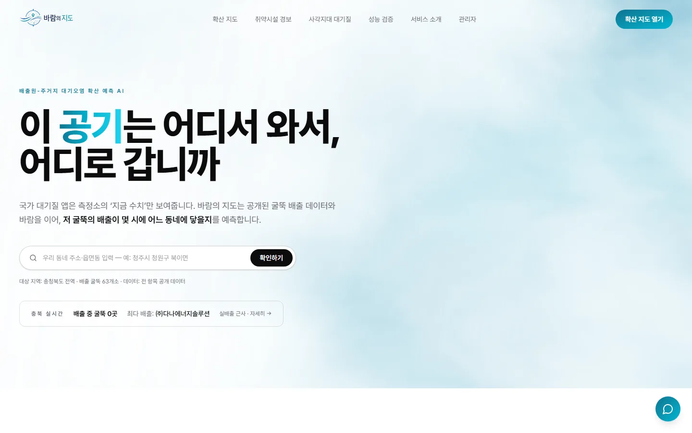
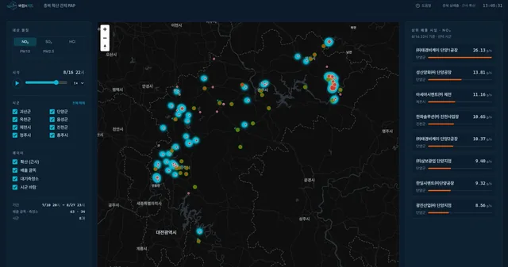
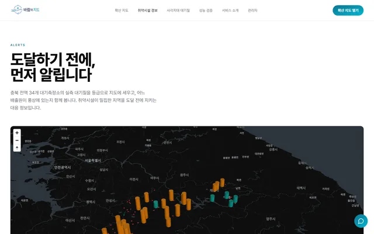
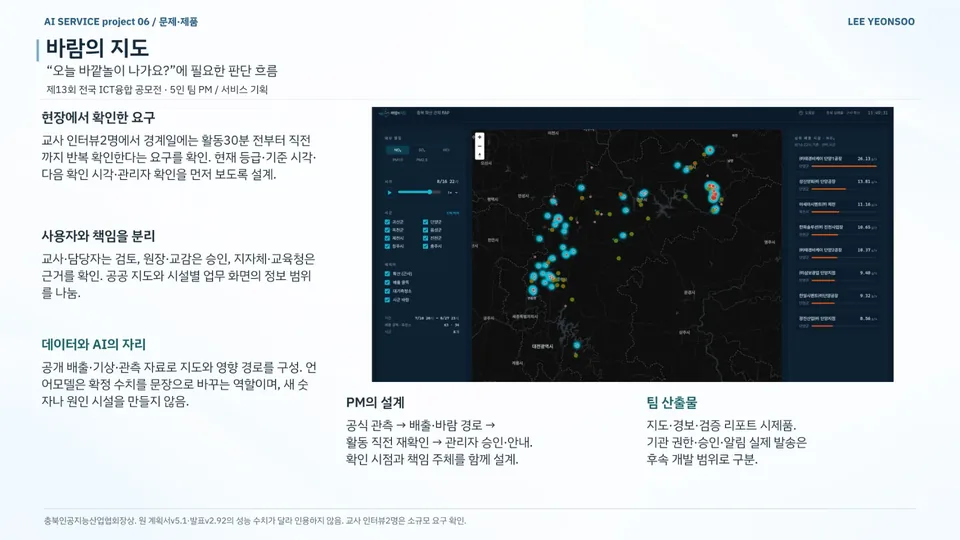
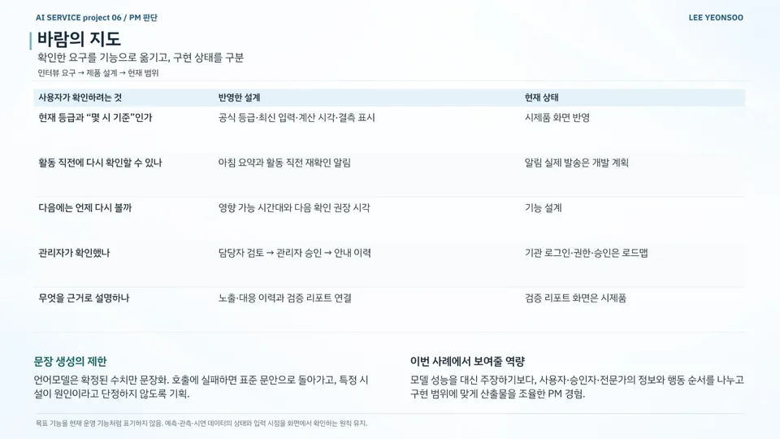
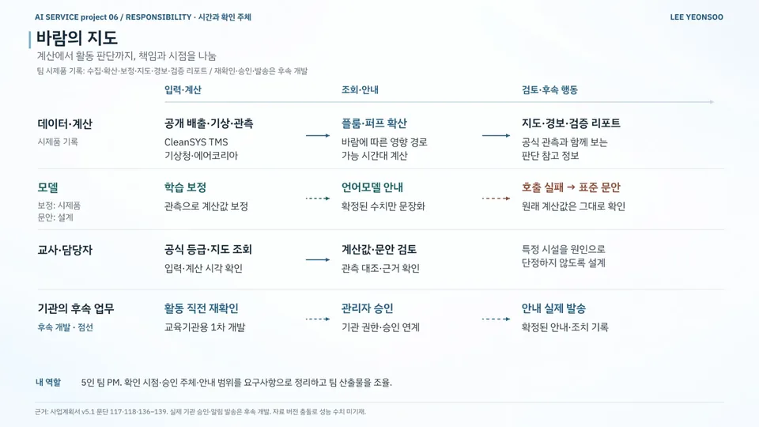
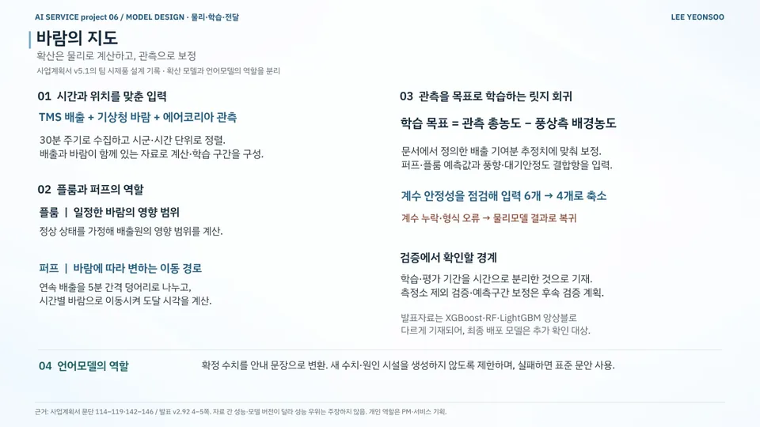

AI 서비스 기획 / 공공·정책 / 환경·교육
바람의 지도
Map of the Wind — Air-Quality Decision Flow for Outdoor Activities
바깥놀이 전 대기질 확인 시점과 담당자 승인 절차 설계
현재 상태팀 시제품 · 재확인·승인·발송은 후속 개발
- 기간
- 2026 (제13회 전국 ICT융합 공모전)
- 팀
- 팀 바랑이 (5인)
- 내 역할
- 팀 대표 · PM · 서비스 기획
- 도구
- 수상
- 장려 등급 충북인공지능산업협회장상
제13회 전국 ICT융합 공모전
내 기여팀 대표·PM으로 요구사항·기능 우선순위와 확인 시점·승인 주체·안내 범위를 정하고, 기획서·기능명세서·사업계획서를 정리해 팀 산출물을 조율했습니다. 물리모형·학습 보정·웹 구현은 팀이 함께 만들었습니다.
사진·화면


크게 보기
크게 보기충북 확산 관제 지도: 굴뚝 배출원과 시간대별 확산출처팀 자료 
크게 보기취약시설 사전 경보: 도달하기 전에, 먼저 알립니다출처windmap-sandy.vercel.app/alerts (새 창)


발표 자료

크게 보기포트폴리오 슬라이드 17쪽 · 본문 내용을 한 장으로 정리한 슬라이드 
크게 보기포트폴리오 슬라이드 18쪽 · 본문 내용을 한 장으로 정리한 슬라이드 
크게 보기포트폴리오 슬라이드 19쪽 · 본문 내용을 한 장으로 정리한 슬라이드 
크게 보기포트폴리오 슬라이드 20쪽 · 본문 내용을 한 장으로 정리한 슬라이드


문제
대기질 경계일에 교사는 활동 30분 전부터 직전까지 대기질을 반복해서 확인해야 했습니다. 현재 등급과 함께 기준 시각, 다음 확인 시각, 관리자 확인 여부도 필요했습니다.
접근
- 교사 2명 인터뷰로 요구 파악 → 현재 등급·기준 시각·다음 확인 시각·관리자 확인을 먼저 보도록 설계
- 책임 분리: 교사·담당자는 검토, 원장·교감은 승인, 지자체·교육청은 근거 확인
- CleanSYS TMS 배출·기상청 바람·에어코리아 관측 자료를 30분마다 수집해 시군·시간별 정렬
- 플룸·5분 간격 퍼프 모형에 관측값을 목표로 학습한 릿지 회귀 보정 적용
핵심 판단
언어모델은 확정 수치만 문장화하고 새 수치·원인 시설을 만들지 않으며 호출 실패 시 표준 문안으로 복귀
(팀 설계) 계수 안정성을 점검해 보정 입력을 6개에서 4개로 축소하고 계수 오류 시 물리모델 결과로 복귀
재확인 알림·기관 승인·실제 발송은 후속 개발 과제로 분리
결과
- 요구 파악 인터뷰교사 2명현재 등급·기준 시각 우선
- 자료 수집 주기30분배출·바람·관측 자료 정렬
- 보정 입력6
에서 4개 사업계획서 v5.1 팀 설계
- 수집·확산·보정·지도·경보·검증 리포트로 구성된 팀 시제품
- 사용자 질문 → 반영 설계 → 현재 구현 상태를 구분한 요구사항 표
- 충북인공지능산업협회장상
AI 활용
언어모델은 확정된 수치를 안내 문장으로 바꾸는 데만 쓰고, 새 수치나 원인 시설은 만들지 않게 했습니다(실패 시 표준 문안). 학습 보정은 관측값을 목표로 한 릿지 회귀입니다(팀 설계).
한계와 다음 단계
모델과 성능 수치가 자료 버전마다 달라 비교가 어렵고, 교사 2명 인터뷰는 소규모 요구 파악입니다. 재확인 알림·기관 권한·승인·실제 발송과 측정소 제외 검증·예측구간 보정은 후속 과제입니다.